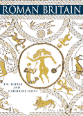

| |

Featured Book
Roman Britain
This is an authoritative account of Roman Britain, written by two leading scholars in the field.
The late Tim Potter was Keeper of Prehistory and Early Europe in The British Museum and Catherine
Johns has been a curator for Roman Britain for 34 years. Catherine has updated the book to include
recent material like the Hoxne hoard.

T. W. Potter and C. Johns, The British Museum Press 2002.
ISBN: 0 7141 2774 4
|
|
Children's Books on Roman Britain and the Roman Empire :
Note that children's books tend to have very short print runs and can go out of print within a year.
However, they are often republished. The selection below
provides a quite comprehensive overview of books that have been or are in press.
Children's Books relevant to Roman Britain and the Roman Army:
Children's Books on the Roman Empire:
- S. James, Ancient Rome (Dorling Kindersely Eyewitness Guide, 1990)
- S. James, Ancient Rome (Heinemann, 1992)
- A. Millard, Ancient Rome (Usbourne Publishing Ltd., 1987)
- A. Marks and G. Tingay, The Romans (Usborne, 1990)
- M. Corbishley, Rome and the Ancient World (Simon and Schuster, 1991)
- R. Burrell, The Romans (Oxford University Press, 1991)
- S. McNeill, Ancient Romans at a Glance (Macdonald Young Books, 1998)
- R. Jackson, S. James and E. Myers, The Romans Activity Book (BMP, 1999)
- J. and L. James, Digging Deeper into the Past - The Romans (Heinemann, 1997)
- N. Kelly, R. Rees and J. Shuter, Living Through History - The Roman Empire (Heinemann, 1997)
- Snapping Turtle Guide, Roman Life (Ticktock, 1998)
- J. Chisholm, Living in Roman Times (Usbourne, 1987)
- P. Connolly, Pompeii (Macdonald Education, 1979)
- P. Connolly, The Roman World: Pompeii (Oxford University Press, 1990)
- P. Higgs, Digging up Pompeii and Herculaneum (Wayland, 1995)
- P. Crisp, The World of the Roman Emperor (Macdonald Young Books, 1999)
- A. Ganeri, All in a day's work - Emperors and Gladiators(Heinemann, 1997)
- F. Macdonald, The Roman Colosseum (Macdonald Young Books, 1996)
- J. Malam, Gladiator, Life and Death in Ancient Rome (Dorling Kindersley, 2002)
- A. Masters and P. Dennis, Roman Myths (Macdonald Young Books, 1999)
- J. Malam, Myths and Civilisation of Ancient Romans (Watts, 1999)
- G. Chapman, Art from the Past - The Romans (Heinemann, 1998)
- S. Hodge, Ancient Roman Art (Heinemann, 1997)
- P. Dowswell, The Roman Record (Usborne, 1997)
A story inspired by The Mildenhall Treasure:
- R. Dahl, 'The Mildenhall Treasure', in The wonderful story of Henry Sugar and six more (Jonathan Cape, London, 1977)
- R. Dahl, 'The Mildenhall Treasure' (Jonathan Cape, London, 1999)
CD-Rom:
- S. Moorhead, Journeys in the Roman Empire (BMP, Channel 4 and Braunarts, 2001
|
|


The Leadenhall Street Mosaic
(Bacchus on a tiger) from Leadenhall Street, London.
1st or 2nd century AD |